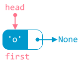
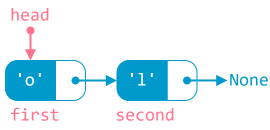
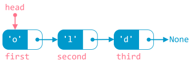

Danh sách liên kết¶
Tóm lược nội dung
Bài này trình bày những khái niệm về danh sách liên kết.
Đặt vấn đề¶
Khi lưu trữ và xử lý tập hợp gồm nhiều phần tử, mảng là một lựa chọn phù hợp. Song mảng vẫn có những hạn chế như:
-
Kích thước của mảng là cố định. Số lượng phần tử của mảng không thể tăng hoặc giảm một cách linh hoạt. Ta thường phải khai báo dư so với số lượng sử dụng thực tế.
-
Khi cần chèn hoặc xoá phần tử, ta phải dịch chuyển những phần tử khác, dẫn đến hao phí về mặt thời gian và bộ nhớ, hoặc có thể phải sao chép các phần tử từ mảng hiện có sang mảng mới, hiệu quả thực thi lại càng kém hơn.
Vì thế, ta cần một cấu trúc dữ liệu khác có thể khắc phục những hạn chế này.
Tổng quan¶
Khái niệm¶
Danh sách liên kết là cấu trúc dữ liệu gồm các phần tử kết nối với nhau.
Xe lửa có thể xem là hình ảnh minh họa cho danh sách liên kết: xe lửa gồm nhiều toa, toa liền trước móc nối với toa liền sau.
{kind=link}
Thành phần¶
Mỗi phần tử trong danh sách liên kết được gọi là một node, thường được tổ chức thành hai phần:
- Phần thứ nhất chứa dữ liệu, đặt là
data. -
Phần thứ hai chứa địa chỉ của một node khác, đặt là
next(1).- Khi
nextcủa node liền trước chứa địa chỉ của node liền sau, ta nói rằng, node trước trỏ vào / trỏ tới / trỏ đến node liền sau.
- Khi
{kind=link}
Node cuối cùng có thành phần next trỏ đến None, mang ý nghĩa rỗng, không có giá trị. None là dấu hiệu giúp nhận biết không còn node tiếp theo nữa.
Bên cạnh đó, danh sách liên kết còn có một biến được dùng để nắm giữ node đầu tiên, đặt là head. Biến head đóng vai trò là điểm khởi đầu của danh sách liên kết. Dựa vào head, ta có thể duyệt từng node trong danh sách liên kết.
{kind=link}
Ứng dụng¶
Danh sách liên kết có thể được áp dụng trong những bài toán:
- Thao tác chèn thêm hoặc xoá bớt thường xuyên diễn ra.
- Quản lý bộ nhớ động, tức bộ nhớ thay đổi trong khi chạy chương trình, chứ không cố định từ đầu.
Phân loại¶
Có nhiều loại danh sách liên kết, chẳng hạn:
- Danh sách liên kết đơn
- Danh sách liên kết đôi
- Danh sách liên kết vòng
Bài học này chỉ đề cập danh sách liên kết đơn, từ đây gọi tắt là danh sách liên kết.
Một vài thao tác xử lý¶
Về mã lệnh trong bài này
Việc viết mã lệnh cho danh sách liên kết trong bài này đòi hỏi kiến thức về lập trình hướng đối tượng và kỹ thuật lập trình, vốn nằm ngoài chương trình phổ thông. Do đó, một số câu lệnh sẽ chỉ diễn giải sơ nét. Bạn có thể ghép các đoạn mã thành chương trình hoàn chỉnh để chạy mà không cần quá quan tâm chi tiết kỹ thuật.
Khởi tạo¶
Giả sử, mỗi node chỉ chứa dữ liệu là một ký tự.
Để khởi tạo danh sách liên kết gồm ba node, ta làm như sau:
Bước 1:
Tạo kiểu dữ liệu node gồm hai thành phần data và next.
Bước 2:
Tạo kiểu dữ liệu danh sách liên kết, đặt tên là linked_list.
-
Thuộc tính
headdùng để nắm giữ node đầu tiên.Lệnh này chỉ là khai báo mang tính thủ tục, thuộc tính
headtạm thời trỏ đếnNone.
Bước 3:
Trong chương trình chính, ta khai báo biến danh sách liên kết, đặt tên là L.
- Lúc này, danh sách liên kết
Llà rỗng, chưa có node nào, do thuộc tínhheadcủaLđang trỏ đếnNonenhư khai báo tại bước 2.
Bước 4:
Khởi tạo ba node, lần lượt đặt tên là first, second và third, chứa dữ liệu lần lượt là 'o', 'l' và 'd'.
- Lúc này, cả ba node đều đơn lẻ, rời rạc, chưa có kết nối với nhau.
{kind=link}
Bước 5:
Liên kết các node với nhau bằng cách cho thuộc tính head của L trỏ đến một node nào đó, rồi cho node này trỏ đến một node khác, và cứ như thế đối với các node còn lại.
-
Bước 5.1: Cho
headcủaLtrỏ đếnfirst.
-
Bước 5.2: Cho
nextcủafirsttrỏ đếnsecond.
-
Bước 5.3: Cho
nextcủasecondtrỏ đếnthird.
{kind=link}
{kind=link}
{kind=link}
Duyệt¶
Duyệt danh sách liên kết là tiến trình di chuyển lần lượt qua các node, xuất phát từ node đầu tiên, do biến head trỏ đến, cho đến node cuối cùng, là node có thành phần next trỏ đến None.
Cụ thể, ta sử dụng biến current, xuất phát từ head, rồi dùng vòng lặp cho current lần lượt trỏ đến các node tiếp theo, cho đến khi gặp None.
Hàm sau đây thực hiện duyệt danh sách liên kết và in ra màn hình dữ liệu của từng node.
Trong chương trình chính, ta gọi hàm vừa viết trên.
Output:
Chèn vào trước một node có dữ liệu key¶
Giả sử node có dữ liệu key đã tồn tại trong danh sách liên kết và không phải là node đầu tiên.
Để chèn node mới vào trước node key, ta thực hiện các bước sau:
Bước 0:
Tạo node mới, đặt tên là new_node, chứa dữ liệu new_data.
Bước 1:
Duyệt danh sách liên kết bằng hai biến previous và current cho đến khi tìm thấy node key:
- Cho
currenttrỏ đến node đầu tiên. -
Dùng vòng lặp để tìm node có dữ liệu
key:- Nếu tìm thấy
keythì ngắt vòng lặp. Chuyển sang bước 2. - Ngược lại, chưa tìm thấy, thì cho
previousthay thếcurrentvà chocurrentdi chuyển đến node tiếp theo.
Bước này mang ý nghĩa rằng, biến
previousluôn bước nối gót theo biếncurrent. - Nếu tìm thấy
{kind=link}
Bước 2:
Cho next của node mới trỏ đến current.
{kind=link}
Bước 3:
Cho next của previous trỏ đến node mới.
{kind=link}
Hàm chèn thêm node mới vào trước node có dữ liệu key viết như sau:
Trong chương trình chính, ta gọi hàm vừa viết trên.
Output:
Chèn và xoá node
Các thao tác thêm node và xoá node thực chất đều là thay đổi thành phần next này, nghĩa là thay đổi liên kết giữa các node.
Lưu ý
Hàm này áp dụng cho trường hợp lý tưởng, đó là node key có tồn tại trong danh sách liên kết và không phải là node đầu tiên.
Khi viết đầy đủ, ta cần xét thêm các trường hợp:
- Danh sách liên kết rỗng, chưa có node nào.
- Node
keylà node đầu tiên. - Node
keykhông tồn tại.
Xoá node có dữ liệu key¶
Giả sử node có dữ liệu key đã tồn tại trong danh sách liên kết và không phải là node đầu tiên.
Để xoá node có dữ liệu key, ta thực hiện các bước sau:
Bước 1:
Duyệt danh sách liên kết bằng hai biến previous và current cho đến khi tìm thấy node key:
- Cho
currenttrỏ đến node đầu tiên. -
Dùng vòng lặp để tìm node có dữ liệu
key:- Nếu tìm thấy
keythì ngắt vòng lặp. Chuyển sang bước 2. - Ngược lại, chưa tìm thấy, thì cho
previousthay thếcurrentvà chocurrentdi chuyển đến node tiếp theo.
Tương tự thao tác chèn, tại bước này, ta cũng cho
previousdi chuyển nối gótcurrent. - Nếu tìm thấy
{kind=link}
Bước 2:
Ngắt liên kết từ previous đến current, là node chứa key cần xoá, bằng cách cho next của previous trỏ đến node liền sau current.
{kind=link}
Bước 3:
Thủ tiêu current.
{kind=link}
Hàm xoá một node có dữ liệu key viết như sau:
Trong chương trình chính, ta gọi hàm vừa viết trên.
Output:
Lưu ý
Hàm này cũng áp dụng cho trường hợp lý tưởng, đó là node key cần xoá có tồn tại trong danh sách liên kết và không phải là node đầu tiên.
Khi viết đầy đủ, ta cần xét thêm các trường hợp:
- Danh sách liên kết rỗng, chưa có node nào.
- Node
keylà node đầu tiên. - Node
keykhông tồn tại.
Sơ đồ tóm tắt¶
Mã nguồn¶
Các đoạn mã trong bài được đặt tại:
Some English words¶
| Vietnamese | Tiếng Anh |
|---|---|
| danh sách liên kết đôi | doubly linked list |
| danh sách liên kết đơn | singly linked list |
| danh sách liên kết vòng | circular linked list |